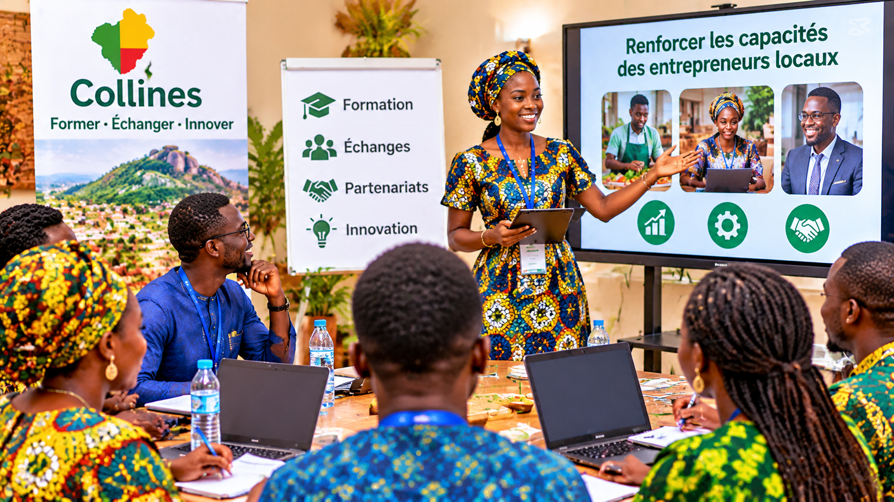

Rendre visible
Faire connaître les produits, talents et entreprises du territoire àun large public.
La FIC n'est pas une simple foire. C'est un espace de valorisation, de connexion et de projection pour le département des Collines.
Réunir différents acteurs autour d'une même dynamique : exposer, découvrir, échanger, connecter, entreprendre.
Offrir une vitrine aux produits, savoir-faire et entreprises du territoire.
Faire connaître la richesse culturelle, artisanale et touristique des Collines.
Créer des espaces de dialogue entre producteurs, investisseurs et institutions.
Relier les talents locaux aux opportunités nationales et internationales.
Transformer les potentialités locales en activités économiques durables.
Faire briller les Collines au-delàde ses frontières.
Rendre visibles les richesses et savoir-faire du territoire.
Faire réussir ensemble les acteurs locaux.
Inscrire les initiatives dans le temps long.
Valoriser le Made in Collines dans toute sa diversité.
Faire connaître les produits, talents et entreprises du territoire àun large public.
Faciliter les rencontres entre producteurs, acheteurs, investisseurs et partenaires.
Générer des retombées économiques concrètes pour les acteurs du département.
Faire des Collines une destination attractive et authentique.

Offrir des espaces de formation et d'échange aux entrepreneurs locaux.
Installer la FIC comme un rendez-vous annuel incontournable.
Le cœur de la FIC, au centre du département des Collines.
Ensemble, faisons de cette première édition un succès pour tout le territoire.
Nous contacter